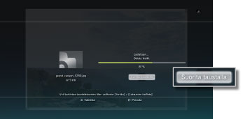
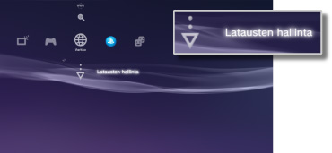

Verkko > Taustalataus
Taustalataus
Taustalataus on toiminto, jonka avulla voit suorittaa järjestelmässä muita toimintoja samalla kun lataat useita tiedostoja tai yhtä suurta tiedostoa. Tämä toiminto on käytettävissä vain, jos [Suorita taustalla] näkyy näytössä lataamisen aikana.

Vihjeitä
- Ladattavien tietojen tyyppi tai ladattavien tiedostojen määrä voi vaikuttaa siihen, että taustalatausta ei voi suorittaa.
- Ladattujen tietojen, kuten pelien tai videotiedostojen, käyttö saattaa edellyttää asentamista. Kun lataus on valmis, asennusta vaativat tiedostot merkitään
 - tai
- tai  -kuvakkeella.
-kuvakkeella. - Taustalataus ei ehkä ole käytössä, jos järjestelmän tallennustilassa on asentamattomia tietoja.
- Jos PS3™-järjestelmä sammutetaan taustalatauksen aikana, lataustiedot tallennetaan. Lataus jatkuu automaattisesti, kun PS3™-järjestelmään kytketään taas virta ja järjestelmä liitetään Internetiin.
- Taustalataus keskeytyy väliaikaisesti, jos käyttäjä suorittaa jonkin alla mainituista toiminnoista. Lataus jatkuu automaattisesti, kun kyseinen toiminto on valmis.
- - Blu-ray Disc- tai DVD-levyn toistaminen
- - online-pelien verkkotoimintojen käyttäminen*
- - PlayStation®2-muotoisten ohjelmistojen käynnistäminen
- - ääni-/videochatin käyttäminen
- - järjestelmän päivittäminen
- -
 (Asetukset) -valikon asetusten muuttaminen
(Asetukset) -valikon asetusten muuttaminen
*
Kun peli on päättymässä, taustalataus keskeytyy hetkeksi.
Huomautukset
- Jotkin PlayStation®2- ja PlayStation®-muotoiset ohjelmistot voivat käyttäytyä eri tavoin PS3™-järjestelmässä kuin PlayStation®2- tai PlayStation®-järjestelmissä, ja ne eivät ehkä toimi PS3™-järjestelmässä oikein.
- PlayStation®2-muotoisia levyjä ei voi käyttää joissakin PS3™-järjestelmissä. Lisätietoja on kohdassa [Toistettavat levytyypit], oman alueesi SIE-verkkosivustossa ja PS3™-järjestelmän mukana toimitetuissa asiakirjoissa.
Latausten hallinta
Tämä vaihtoehto on näkyvissä vain taustalatauksen aikana. Tämän toiminnon avulla voit tarkistaa latauksen tilan tai peruuttaa latauksen  (Internet-selain)- tai
(Internet-selain)- tai  (PlayStation®Store) -kohteesta. Valitse
(PlayStation®Store) -kohteesta. Valitse  (Verkko) ja sitten
(Verkko) ja sitten  (Latausten hallinta).
(Latausten hallinta).

Latauksen tilan tarkistaminen
Valitse niiden tietojen kuvake, joiden lataustilan haluat tarkistaa, paina  -näppäintä ja valitse sitten asetusvalikosta [Tila].
-näppäintä ja valitse sitten asetusvalikosta [Tila].
Latauksen peruuttaminen
Valitse niiden tietojen kuvake, joiden latauksen haluat peruuttaa, paina -näppäintä ja valitse sitten asetusvalikosta [Peruuta]. Kun lataus on peruutettu, se poistetaan kohdasta (Latausten hallinta).
Latausten seisauttaminen/jatkaminen
Valitse niiden tietojen kuvake, joiden latauksen haluat keskeyttää, paina -painiketta ja valitse sitten asetusvalikosta [Tauko]. Voit jatkaa lataamista painamalla -näppäintä uudelleen ja valitsemalla sitten asetusvalikosta [Jatka].
Vihjeitä
- Jos seisautat lataamisen, kuvakkeen vieressä näkyy kuvake
 .
. - Jos seisautat latauksen ladatessasi useita tiedostoja, seuraavan tiedoston lataaminen aloitetaan automaattisesti.
Kaikkien latausten seisauttaminen
Valitse minkä tahansa latauksen kuvake, paina -näppäintä ja valitse sitten asetusvalikosta [Seisauta kaikki].
Kaikkien latausten jatkaminen
Valitse minkä tahansa latauksen kuvake, paina -näppäintä ja valitse sitten asetusvalikosta [Jatka kaikkien lataamista].